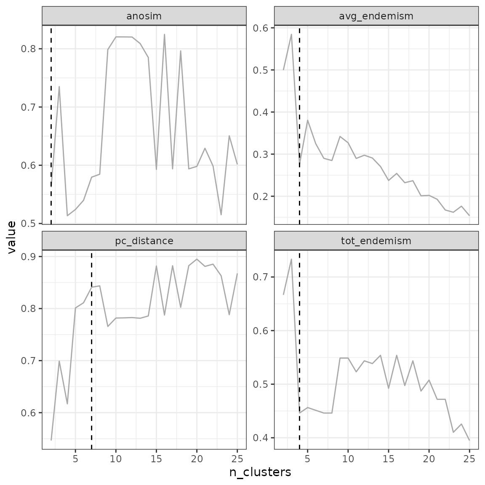

4.2 Non-hierarchical clustering
Pierre Denelle, Boris Leroy and Maxime Lenormand
2025-09-30
Source:vignettes/a4_2_non_hierarchical_clustering.Rmd
a4_2_non_hierarchical_clustering.RmdNon-hierarchical clustering consists in creating groups of objects
(called clusters) while maximizing (or minimizing) an evaluating metric.
Contrarily to hierarchical clustering, the partition obtained is not
nested. All functions in bioregion relying on
non-hierarchical clustering start with the prefix nhclu_.
In biogeography, non-hierarchical clustering is usually applied to
identify clusters of sites having similar species compositions. These
clusters are then called bioregions.
Non-hierarchical clustering takes place on the very right-hand size part
of the bioregion conceptual diagram:

Although these methods are conceptually simple, their
implementation can be complex and requires important choices on the part
of the user. In the following, we provide a step-by-step guide on how to
do non-hierarchical clustering analyses with bioregion.
Such analysis usually has the following steps.
1. Construct a dissimilarity matrix
To initiate the non-hierarchical clustering procedure, we first need to
provide pairwise distances between sites.
2. Clustering Non-hierarchical algorithms rely on a
user-defined number of clusters. Once this number is
defined, users can chose among the 3 functions provided in
bioregion to perform non-hierarchical clustering. These
functions are based on centroid-based algorithms (Kmeans
and PAM
) or density-based algorithms (DBSCAN).
3. Determining the optimal number of clusters
The two functions bioregionalization_metrics()
and find_optimal_n()
help determining what the optimal number of clusters would be (see Section 4 of this vignette).
1. Dissimilarity indices
Pairwise distances between sites can be obtained by running
dissimilarity() on a site-species matrix.
In the example below, we use the fish dataset from the package to compute distance metrics.
library("bioregion")
data("fishmat")
# It is a presence/absence matrix with sites in rows and species in columns
fishmat[1:3, 1:3]## Abramis brama Alburnus alburnus Barbatula barbatula
## Aa 1 1 1
## Abula 0 0 0
## Acheloos 0 0 0We are going to compute the \(\beta_{sim}\) diversity metric, which is a
presence-absence dissimilarity index. The formula is as follows:
\(\beta_{sim} = min(b, c) / (a+min(b,
c))\)
Where a is the number of species shared by both sites; b is the number of species occurring only in the first site; and c is the number of species only occurring only in the second site.
We typically choose this metric for bioregionalization, because it is
the turnover component of the Sorensen index (Baselga, 2012) (in a nutshell, it tells us how
sites are different because they have distinct species), and because it
has less dependence on species richness than the Jaccard turnover (Leprieur & Oikonomou, 2014).
The
choice of the distance metric is very important for the outcome of the
clustering procedure, so we recommend that you choose carefully
depending on your research question.
dissim <- dissimilarity(fishmat, metric = "Simpson")
dissim[1:3, ]## Data.frame of dissimilarity between sites
## - Total number of sites: 338
## - Total number of species: 195
## - Number of rows: 56953
## - Number of dissimilarity metrics: 1
##
##
## Site1 Site2 Simpson
## 2 Aa Abula 0.3333333
## 3 Aa Acheloos 1.0000000
## 4 Aa Adige 0.7692308By default, only the Simpson index is computed, but other options are
available in the metric argument of
dissimilarity(). Furthermore, users can also write down
their own formula to compute any index they wish for in the argument
formula, see ?dissimilarity().
We are now ready to start the non-hierarchical clustering procedure
with the object dissim we have just created. Alternatively,
you can also use other types of objects such as a distance matrix object
(class dist) or a data.frame of your own
crafting (make sure to read the required format carefully as explained
in the help of each function).
2. Centroid-based clustering
The core idea of these algorithms is to place points into the cluster
for which a central-point is the closest. This central-point can either
be the centroid of the cluster, i.e. the mean of the x and y coordinates
of all the points belonging to the cluster, or the medoid. The medoid is the most centrally located
data point in the cluster, or in other words the least dissimilar point
to all points in the cluster.
The objective is then to minimize the sum of squared distances
between points and the assigned centroids/medoids.
2.1. Kmeans
K-means clustering is perhaps the most famous method of
non-hierarchical clustering. It uses centroids of clusters.
This algorithm usually follows an iterative framework such as:
An initialization step creates k centroids with random placements.
For every point, its Euclidean distance with all the centroids is calculated. Each point is then assigned to its nearest centroid. The points assigned to the same centroid form a cluster.
Once clusters are formed, new centroids for each cluster are calculated by taking the mean of the x and y coordinates of all the points belonging to the cluster.
A re-assignment step then calculates new centroids based on the membership of each cluster. Steps 2 and 3 are repeated until the solution converges, i.e. when the centroid positions no longer change.
Finding an optimal solution to K-means is computationally intensive and their implementation rely on efficient heuristic algorithms to quickly converge to a local optimum.
Side-note
The k-means algorithm can become ‘stuck’ in local optima. Repeating the
clustering algorithm and adding noise to the data can help evaluate the
robustness of the solution.
The function to compute K-means clustering in
bioregion is nhclu_kmeans(). We here
illustrate how the functions works with an example applied on the
dissimilarity matrix calculated above.
We chose 3 clusters.
All the above steps come with arguments that can be tweaked.
Specifically, iter_max determines the maximum number of
iterations allowed (i.e. how many times the steps described above are
run) and nstart specifies how many random sets of
n_clust should be selected as starting points.
Several
heuristic algorithms can also be used along with the K-means method and
this can be parameterized using the algorithm argument. By
default, the algorithm of Hartigan-Wong (Hartigan
& Wong (1979)) is used.
Let’s start by setting both iter_max and
nstart to 1.
ex_kmeans <- nhclu_kmeans(dissim, index = "Simpson", n_clust = 3, iter_max = 1,
nstart = 1, algorithm = "Hartigan-Wong")When asking for one iteration only, the function displays a message
saying that the algorithm did not converge.
We therefore need to increase the value of iter_max.
ex_kmeans <- nhclu_kmeans(dissim, index = "Simpson", n_clust = 3, iter_max = 3,
nstart = 1, algorithm = "Hartigan-Wong")Like for all other functions of the bioregion package,
the class of the object is specific for the package (here
bioregion.clusters) and it contains several parts. The
clusters assigned to each site are accessible in the
$clusters part of the output:
ex_kmeans$clusters[1:3, ]## ID K_3
## Aa Aa 3
## Abula Abula 1
## Acheloos Acheloos 2
table(ex_kmeans$clusters$K_3)##
## 1 2 3
## 142 93 103Here, we see that 142 sites are assigned to cluster 1, 93 to cluster
2 and 103 to cluster 3.
This assignment can change depending on the two other main
arguments of the functions, iter_max and
nstart.
ex_kmeans2 <- nhclu_kmeans(dissim, index = "Simpson", n_clust = 3,
iter_max = 100, nstart = 1,
algorithm = "Hartigan-Wong")
ex_kmeans3 <- nhclu_kmeans(dissim, index = "Simpson", n_clust = 3,
iter_max = 3, nstart = 100,
algorithm = "Hartigan-Wong")As shown below, the distribution of sites among the three clusters appears quite homogeneous with our three examples but some discrepancies emerge.
table(ex_kmeans$clusters$K_3, ex_kmeans2$clusters$K_3)##
## 1 2 3
## 1 1 12 129
## 2 77 16 0
## 3 0 9 94
table(ex_kmeans$clusters$K_3, ex_kmeans3$clusters$K_3)##
## 1 2 3
## 1 111 29 2
## 2 0 0 93
## 3 0 102 1
Overall, increasing iter_max and
nstart increases the chances of convergence of the
algorithm but also increases the computation time.
2.2. K-medoids
Instead of using the mean of the cluster, the medoid can also be used
to partition the data points.
In comparison with the centroid used for K-means, the medoid is
less sensitive to outliers in the data. These partitions can also use
other types of distances and do not have to rely on the Euclidean
distance only.
Several heuristics exist to solve the K-medoids problem, the most
famous ones being the Partition Around Medoids (PAM), and its extensions
CLARA and CLARANS.
2.2.1. Partitioning Around Medoids (PAM)
PAM is a fast heuristic to find a solution to the k-medoids problem.
With k clusters, it decomposes following these steps:
1.
Randomly pick k points as initial medoids
Assign each point to the nearest medoid x
Calculate the objective function (the sum of dissimilarities of all points to their nearest medoids)
Randomly select a point y
Swap x by y if the swap reduces the objective function
Repeat 3-6 until no change
In the nhclu_pam() function, there are several arguments
to tweak. The number of clusters n_clust has to be defined
as well as the number of starting positions for the medoids
nstart.
Several variants of the PAM algorithm are available and can be changed
with the argument variant (see cluster::pam()
for more details).
ex_pam <- nhclu_pam(dissim, index = "Simpson", n_clust = 2:25, nstart = 1,
variant = "faster", cluster_only = FALSE)
table(ex_pam$clusters$K_2)##
## 1 2
## 258 80With 2 clusters, we see that 258 sites are assigned to cluster 1 and
80 to cluster 2.
2.2.2. Clustering Large Applications (CLARA)
CLARA (Clustering Large Applications, (Kaufman and Rousseeuw 1990)) is an extension of the k-medoids (PAM) methods to deal with data containing a large number of objects (more than several thousand observations) in order to reduce the computational time and the RAM storage problem. This is achieved by using the sampling approach.
ex_clara <- nhclu_clara(dissim, index = "Simpson",
n_clust = 5,
maxiter = 0L, initializer = "LAB", fasttol = 1,
numsamples = 5L, sampling = 0.25, independent = FALSE,
seed = 123456789L)
table(ex_clara$clusters$K_5)##
## 1 2 3 4 5
## 241 21 16 50 102.2.3. Clustering Large Applications based on RANdomized Search (CLARANS)
CLARANS (Clustering Large Applications based on RANdomized Search, (Ng and Han 2002)) is an extension of the k-medoids (PAM) methods combined with the CLARA algorithm.
ex_clarans <- nhclu_clarans(dissim, index = "Simpson",
n_clust = 5,
numlocal = 2L, maxneighbor = 0.025,
seed = 123456789L)
table(ex_clara$clusters$K_5)##
## 1 2 3 4 5
## 241 21 16 50 103. Density-based clustering
Density-based clustering is another type of non-hierarchical clustering. It connects areas of high density into clusters. This allows for arbitrary-shaped distributions as long as dense areas can be connected. These algorithms can however have difficulty with data of varying densities and high dimensions.
3.1. DBSCAN
Density-based Spatial Clustering of Applications with Noise (DBSCAN)
(Hahsler et al. (2019)) is the
most famous density-based clustering approach.
It operates by
locating points in the dataset that are surrounded by a significant
number of other points. These points are regarded to be part of a dense
zone, and the algorithm will next attempt to extend this region to
encompass all of the cluster’s points.
DBSCAN uses the two following parameters:
Epsilon (eps): the maximum distance between two points
to be considered as neighboring points (belonging to the same
cluster).
Minimum Points (minPts): The minimum number of
neighboring points that a given point needs to be considered a core data
point. This includes the point itself. For example, if minimum number of
points is set to 4, then a given point needs to have 3 or more
neighboring data points to be considered a core data point.
If minimum number of points meet the epsilon distance requirement
then they are considered as a cluster.
Having set these two parameters, the algorithm works like this:
Decide the value of
epsandminPts.For each point: Calculate its distance from all other points. If the distance is less than or equal to
epsthen mark that point as a neighbor of x. If the point gets a neighboring count greater than or equal tominPts, then mark it as a core point or visited.For each core point, if it not already assigned to a cluster than create a new cluster. Recursively find all its neighboring points and assign them the same cluster as the core point.
Continue these steps until all the unvisited points are covered.
This algorithm can be called with the function
nhclu_dbscan(). If the user does not define the two
arguments presented above, minPts and eps,
then the function will provide a knee curve helping the search of an
optimal eps value.
ex_dbscan <- nhclu_dbscan(dissim, index = "Simpson", minPts = NULL, eps = NULL,
plot = TRUE)## Trying to find a knee in the curve to search for an optimal eps value...
## NOTE: this automatic identification of the knee may not work properly
## if the curve has knees and elbows. Please adjust eps manually by
## inspecting the curve, identifying a knee as follows:
##
## /
## curve /
## ___________/ <- knee
## elbow -> /
## /
## /Here, we see that we can set eps to 1.
ex_dbscan2 <- nhclu_dbscan(dissim, index = "Simpson", minPts = NULL, eps = 1,
plot = FALSE)With this set of parameters, we only get one cluster.
table(ex_dbscan2$clusters$K_1)##
## 1
## 338If we decrease the eps value and increase
minPts, we can get more clusters.
ex_dbscan3 <- nhclu_dbscan(dissim, index = "Simpson", minPts = 4, eps = 0.5,
plot = FALSE)
table(ex_dbscan3$clusters$K_2)## < table of extent 0 >4. Affinity propagation
This algorithm is based on the paper of Frey & Dueck (2007) and relies on the R package apcluster
Unlike the previous algorithms in this vignette, this algorithm and its associated function use a similarity matrix.
# Similarity matrix
sim <- dissimilarity_to_similarity(dissim)
# Algorithm
clust1 <- nhclu_affprop(sim)5. Optimal number of clusters
Previous methods did not help in determining the optimal number of bioregions structuring the site-species matrix.
For this purpose, we can combine both functions
bioregionalization_metrics() and
find_optimal_n().
bioregionalization_metrics() calcultes several metrics
based on the previous clustering attempts.
bioregionalization_metrics(ex_pam, dissimilarity = dissim,
eval_metric = "pc_distance")## Partition metrics:
## - 24 partition(s) evaluated
## - Range of clusters explored: from 2 to 25
## - Requested metric(s): pc_distance
## - Metric summary:
## pc_distance
## Min 0.5464742
## Mean 0.8022971
## Max 0.8949633
##
## Access the data.frame of metrics with your_object$evaluation_df*Note For the two metrics tot_endemism and
avg_endemism, you also need to provide the site-species
matrix.
a <- bioregionalization_metrics(ex_pam, dissimilarity = dissim, net = fishdf,
species_col = "Species", site_col = "Site",
eval_metric = c("tot_endemism", "avg_endemism",
"pc_distance", "anosim"))Once the bioregionalization_metrics() function has
calculated the partitioning metrics, we can call
find_optimal_n() to get the optimal number of clusters.
## Number of bioregionalizations: 24## Searching for potential optimal number(s) of clusters based on the elbow method## * elbow found at:## tot_endemism 4
## avg_endemism 4
## pc_distance 7
## anosim 2## Plotting results...
## Search for an optimal number of clusters:
## - 24 partition(s) evaluated
## - Range of clusters explored: from 2 to 25
## - Evaluated metric(s): tot_endemism avg_endemism pc_distance anosim
##
## Potential optimal partition(s):
## - Criterion chosen to optimise the number of clusters: elbow
## - Optimal partition(s) of clusters for each metric:
## tot_endemism - 4
## avg_endemism - 4
## pc_distance - 7
## anosim - 2Based on the metric selected, the optimal number of clusters can vary.